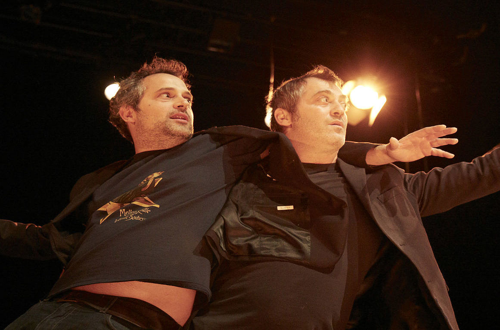
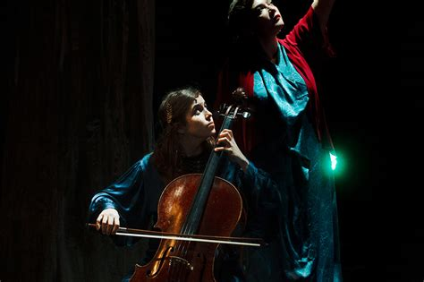
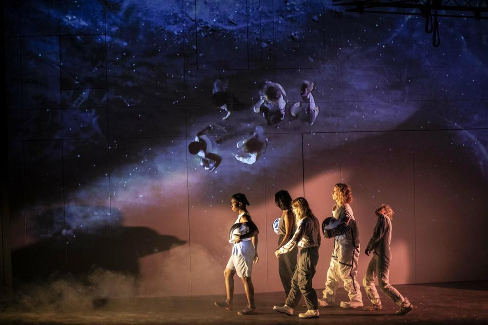

Les spectacles de cette année
Les Sea Girls Dérapage, Mardi 03/12, 20H, GS, La scène et l’envers du décors

Education Nationale, Mardi 10/12, 19H, GS, Le quotidien au plateau

Une histoire subjective du Proche-Orient mais néanmoins valide... je pense, vendredi 07/02, PS, 19H, Espaces géographiques, politiques au plateau

L’Exercice du Super Héros, Mercredi 12/03, 19H, PS, Lieux de vie / lieu du jeu 🡺 réalité ?

Birds on a Wire, Lundi 31/03, 20H, GS

Cosmos, Jeudi 24/04, 19H, GS, L’Espace en scène ?

Marius, Jeudi 22 Mai, 19H, GS (parce que c’est Pommerat !)

Celui que j'attends le plus
Parmis tout les spectacles que nous allons voir, celui qua j'attends le plus est Cosmos. Etant petit, j'ai toujours adoré l'espace, les planétes et les étoiles. C'est pourquoi je pense que c'est celui là que j'attends le plus. Je me demande ainsi comment l'histoire de ces femmes sera raconté et j'attends aussi toutes les belles images oranges-bleues que promet l'affiche.
Mention légale a Une histoire subjective du Proche-Orient mais néanmoins valide... je pense